挖掘需求的方法（上）
日期：2024-08-02
今天的哥飞小课堂，把之前聊过的挖掘需求的方法再整理一次发一下。
先介绍一下，在 SEO 领域，什么是【需求】？
会有人搜索的关键词，就代表这需求。
有些需求是资讯、信息，有些需求是工具、服务，有些需求是商品、店铺，还有些别的各种需求。
我们目前主要聚焦在【出海】【AI】【工具站】领域。
一个一个关键词来解释，先说【出海】，这个很容易理解，出海意味着给全球 70 亿人提供服务，而且可以快速上线，不需要备案，不需要审核。
再来解释【工具站】，工具站通常都可以靠用户付费变现，比单纯靠广告变现收入会高很多。
所以我们主要关注工具、服务相关的关键词，只要有人会搜索的关键词，都是我们的潜在目标。
有些需求比较老，长期稳定存在，比如 PDF 编辑、转换、压缩等需求，这类需求已经很多网站霸占了谷歌前排的位置，我们短时间内很难做个新网站就拿到排名，获取曝光和点击。
但是，如果是一个新出现的关键词，大家几乎都在同一个起跑线上竞争，我们懂 SEO，我们反应比别人快，就有可能赢得竞争。
下面就要解释【AI】了，在 AI 领域，就诞生了很多新的需求，目前几乎可以实现 AI 生成一切，如 AI Image Generator、AI Music Generator、AI Video Generator 等，这些都是之前不曾出现的关键词，或者是老需求，加上了 AI 关键词，也变成了新关键词，新需求。
所以我们群里目前主要聚焦在出海 AI 工具方向，这个方向已经被教育好了，用户知道需要付费才能使用，所以很愿意付钱，并且海外愿意付费的人群还很多。
人在国内，赚美元，真的很香。
所以总结一下，我们要做出海 AI 工具站，第一步就需要去挖掘海外工具的搜索需求关键词，然后做一个网站来满足这个搜索需求，之后通过科学的 SEO 方法，从谷歌等搜索引擎获取流量，最后讲流量变现为美元。
所以，挖掘需求就是重中之重，是一切的基础，是美元之源。
那么有哪些挖掘需求的方法呢？
我们先准备好工具，需要用到谷歌搜索、谷歌趋势、谷歌广告、similarweb、semrush、ahrefs 等平台，用到了哪个工具，我都会说明。
第一种挖掘需求的方法，我们从基础需求关键词出发，也就是所谓的词根出发，找到更多的关键词。这就需求配合哥飞之前发到公众号里的 51 个词根关键词https://mp.weixin.qq.com/s/pFi683ZoT_WJXO_t770vSQ
我们今天先那 Generator 来演示，因为很多 AI 相关的需求关键词都包含 Generator 这个词。有很多工具都可以基于一个关键词来拓展更多关键词，先说完全免费，不需要登录也能使用的 Ahrefs Free Keyword Generator 工具，大家会发现，本身这个工具名就自带了 Generator 这个词。 打开https://ahrefs.com/keyword-generator/ ，选择谷歌，输入关键词 Generator，选择美国，就能够看到拓展出来的一些关键词。
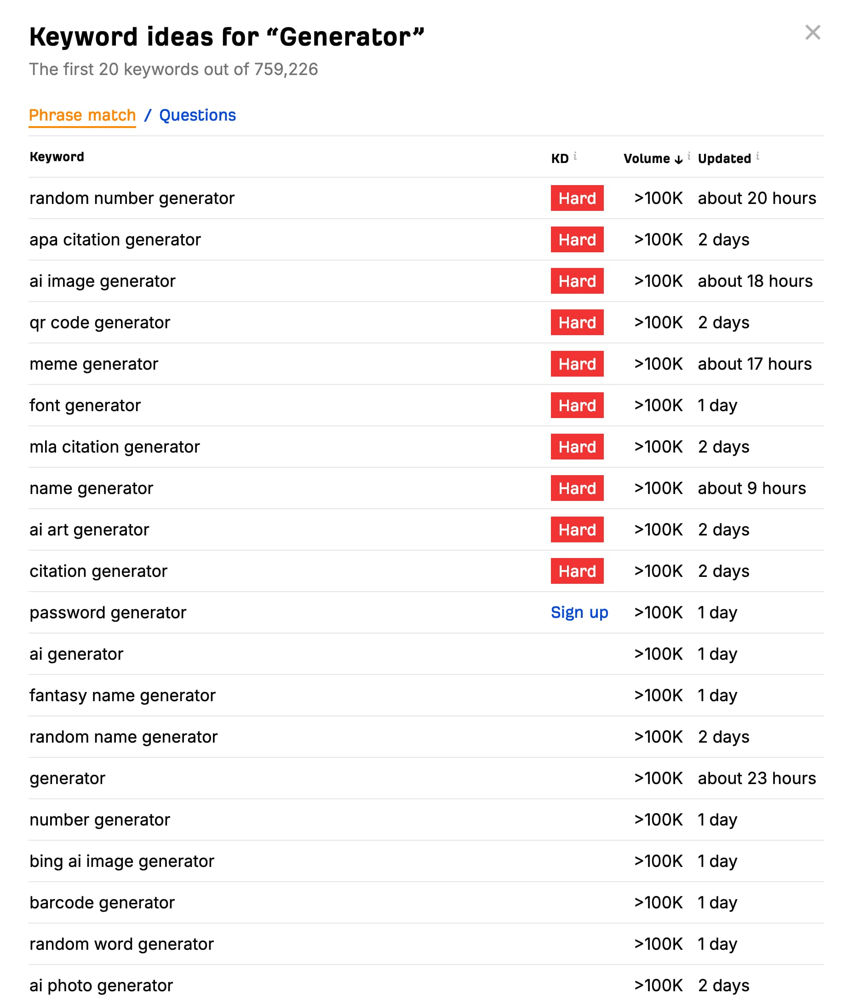
可以看到，这个免费工具虽然可以看到一些关键词，但是默认给出来的都是搜索量比较大的关键词，KD 都很高。 而如果登录注册 Ahrefs，套餐费又挺高的，所以我们一般不用这个工具。
我们可以打开 Semrush，找到关键词研究功能，输入 Generator 就能够看到关于这个关键词的概览数据页面。 我们此时不关心这个关键词本身的数据，所以需要点击下面衍生关键词列表下方按钮“查看全部关键词”。
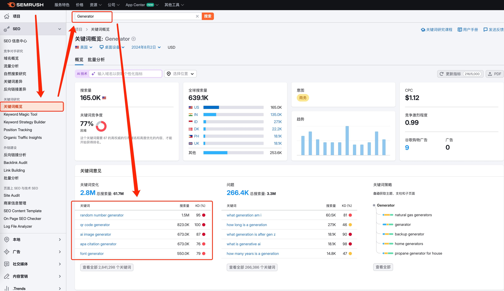
在这个 Keyword Magic Tool 页面，可以看到很多关键词，我们可以用筛选工具，选择搜索量 30000 以上，也就是平均每天 1000 以上的，KD 选择 60 一下的，CPC 选择大于 0.01 的，就得到了一些符合我们需求的关键词列表。
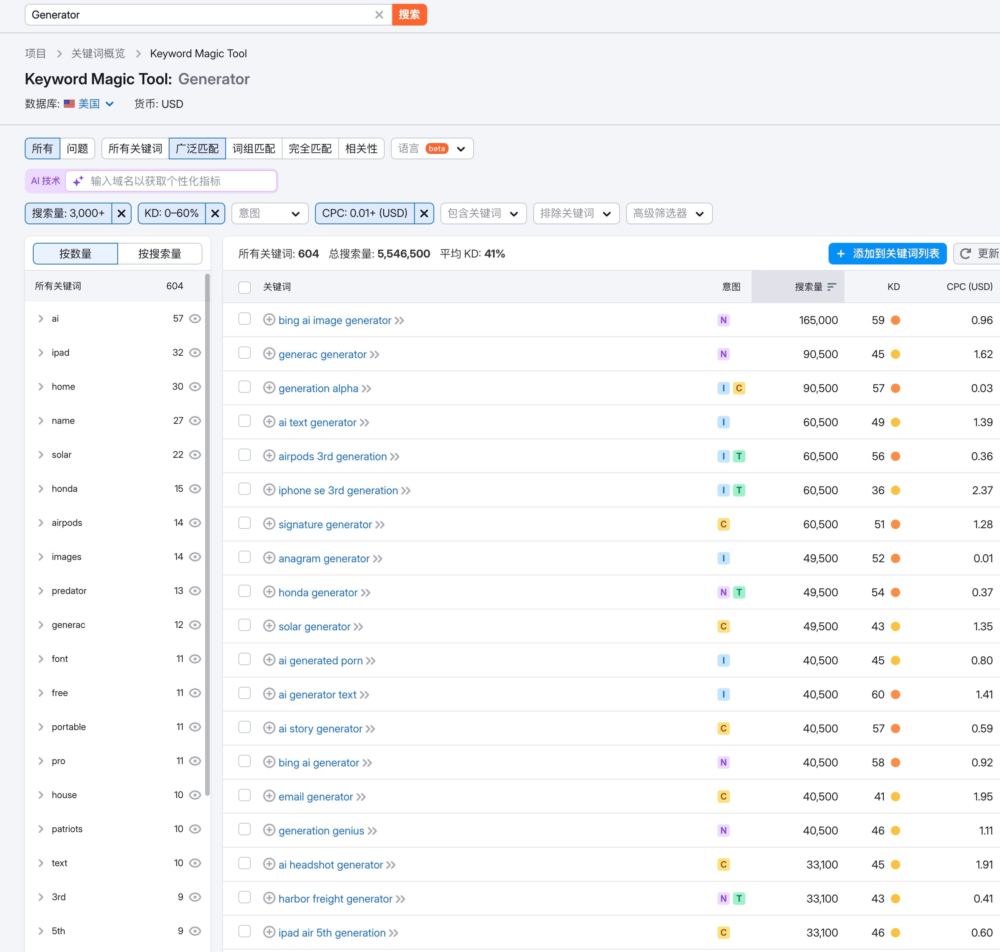
还可以点击左侧的关键词群组，选择 AI，那么出来的就全都是带 AI 且带 Generator 的关键词了。
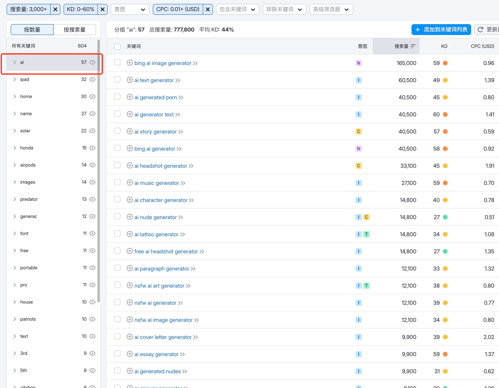
Similarweb 也有关键词拓展功能，在关键词研究 -> 关键词生成器里，同样输入一个关键词，就能够找到很��多相关关键词。同样设置一些筛选条件，可以找到一些关键词。
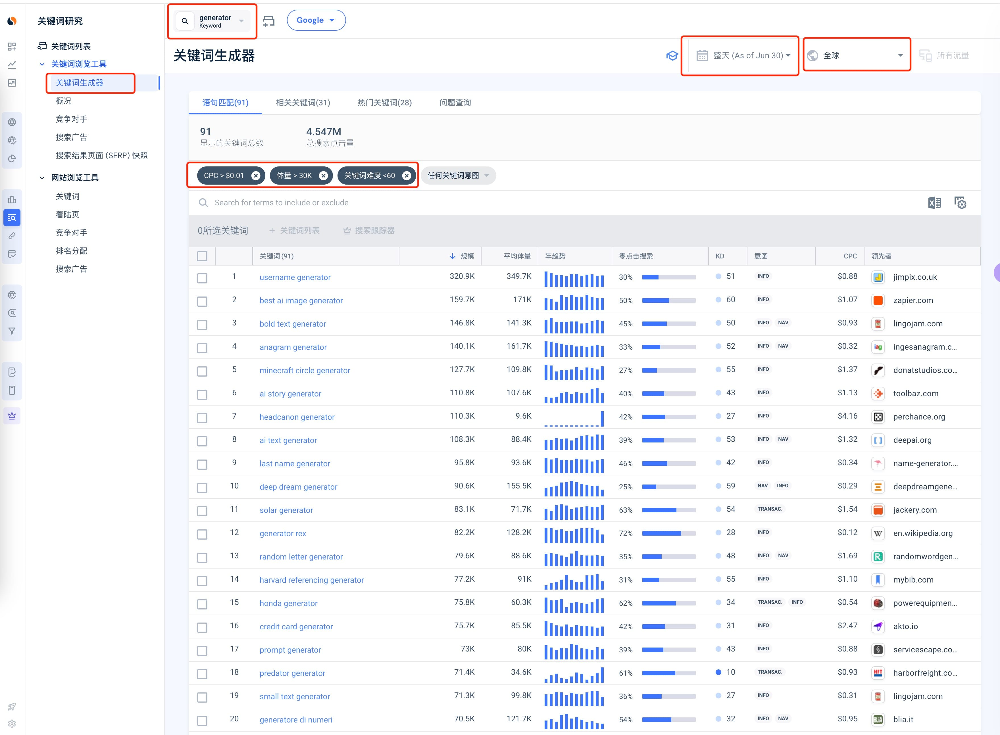
有了这些关键词列表，我们就可以进一步的筛选，举例你可以按照搜索量从高到低排序，也可以按照优化难度 KD 从低到高排序，也可以按照 CPC 从高到低排序。
通过年趋势这一列，你甚至可以可视化的看出这个关键词是否是一个新词。
很明显 headcanon generator 就是一个新词，之前都没啥搜索量，最近才有搜索量。为了判断是否是新词，我们还可以借助谷歌趋势来看。
打开谷歌趋势https://trends.google.com/trends/explore?q=headcanon%20generator&hl=zh-CN 时间选择最近 12 个月，很容易看出来，这个词是 5 月底才出现的。
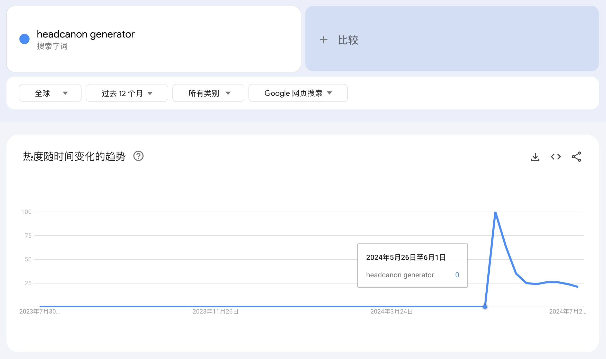
我们还可以借助谷歌广告后台进一步确认这个词的真实搜索量。 打开谷歌广告后台，找到工具 -> 规划 -> 关键词规划工具 -> 选择获取搜索量和预测数据，输入我们想查询的关键词，把地理位置选择为全球，时间选择 5 月和 6 月，就看到了，6 月这个词的搜索量是 13.5 万，平均每天 4500 次搜索。
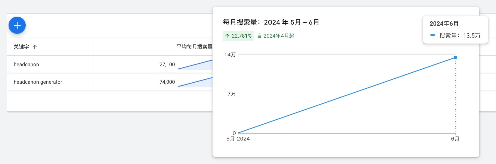
有了关键词，我们就可以去谷歌实际搜索一下这个关键词，看看目前的第一页结果都是什么。
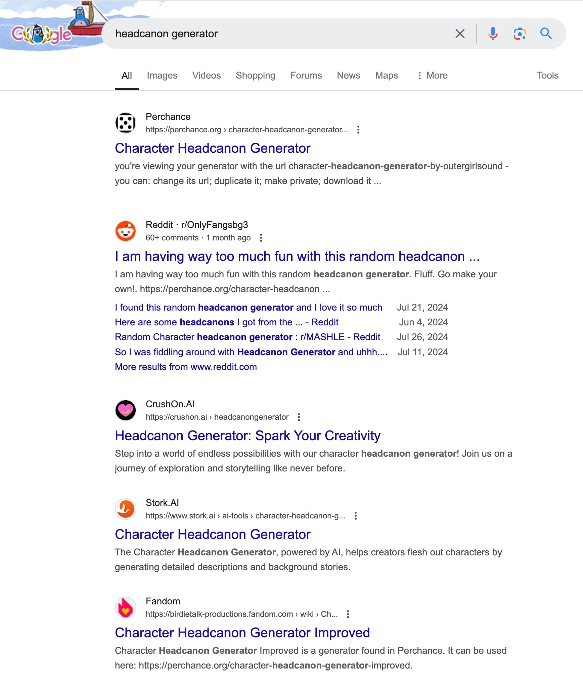
目前可以看到，美国区，用英语搜索，出来的第 1、第 3 都是工具，不过是内页。第 2 是 Reddit 的讨论区。第 4 是一个 AI 导航站，这个站记起来，要考，属于是 SEO 做的比较好的网站，可以去上面提交我们的产品。
补充一下，第一种方法，总共有 51 个关键词，刚才我们只看了第一个关键词，还剩下这么多关键词，大家都可以去看一看。做 SEO，你的数据敏锐度怎么训练出来的？就是靠多看，多研究，多分析。
剩下的结果分析我们今天就不深入了。继续说挖掘需求。
刚才介绍了基于某个基础关键词，去拓展找到更多关键词的方法。我们再说第二种方法，是基于某一个网站，找到这个网站的流量来源关键词。举例 canca.com 是 SEO 做的很好的大站，我们可以研究他从哪些关键词获得了流量，我们是否也可以从这些关键词获取流量呢。
第二种，根据 SEO 大站来查关键词，依然有多个平台可以使用。如 Ahrefs 的 Website Traffic Checker（这里又一个词根 Checker）https://ahrefs.com/traffic-checker 在这里可以免登录看到所查网站的流量数据，核心关键词数据，能够拿到大流量的页面数据。
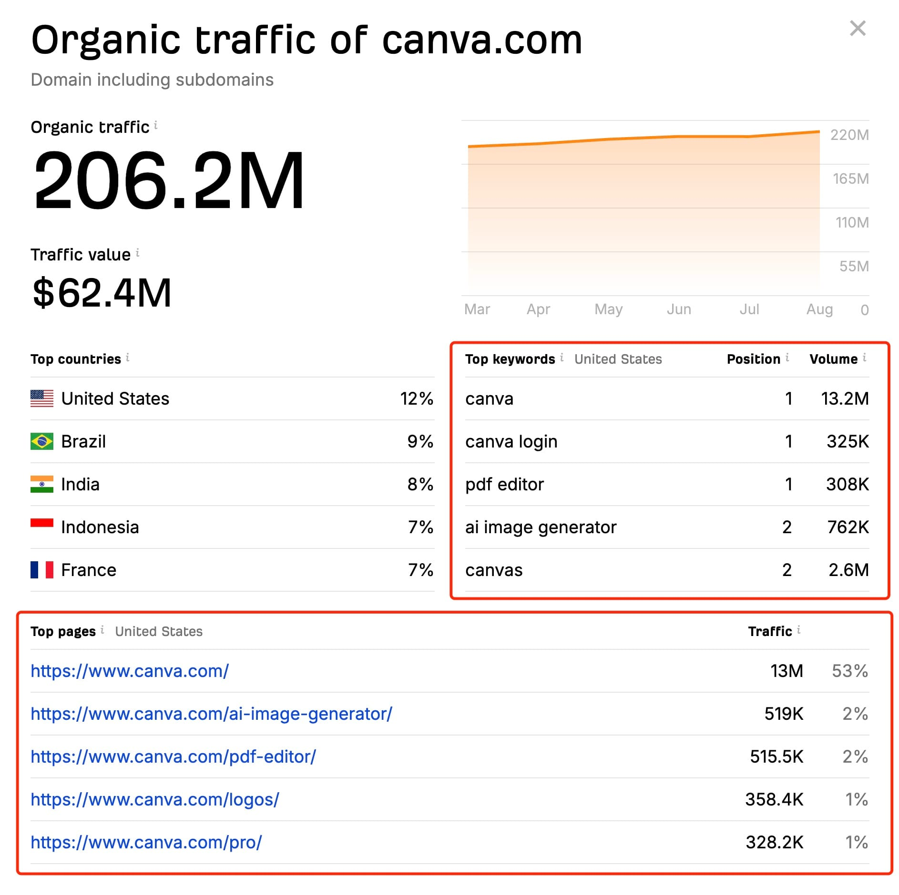
第二个平台是 Semrush，输入域名，就能够看到这个域名对应网站的数据。我们主要关注自然搜索流量和自然搜索关键词和能够获取流量的页面有哪些。 先看关键词，点击“查看详情”，可以进入关键词列表，看到很多关键词。
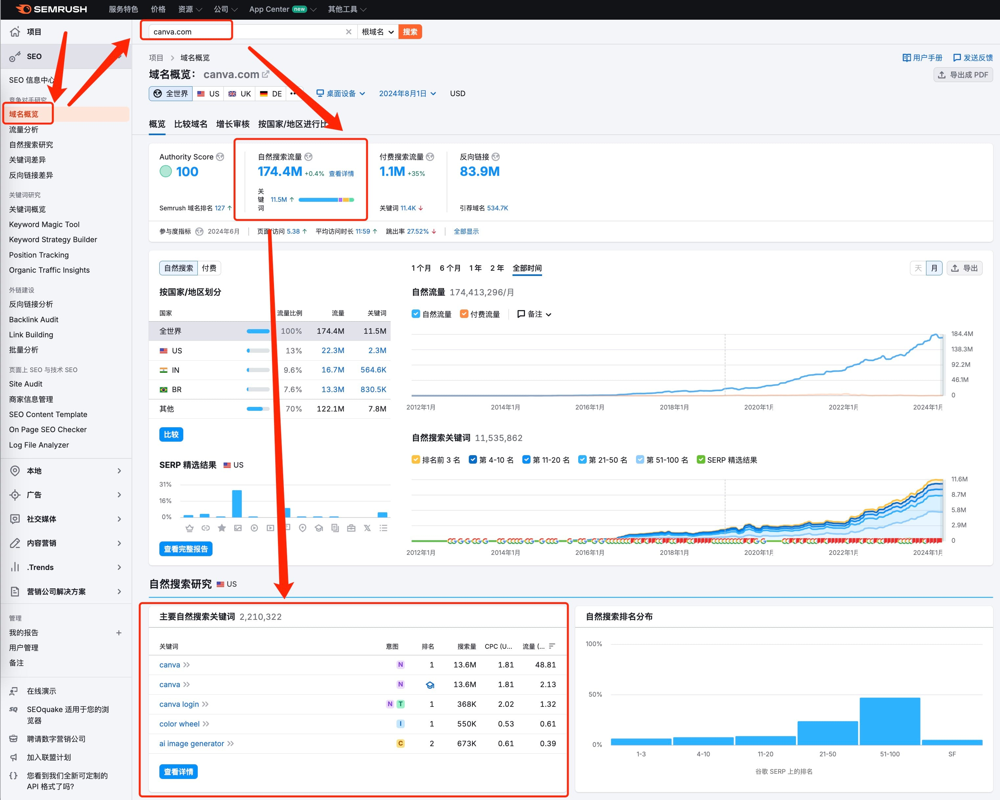
在排除掉品牌词之后，我们就能够看到 Canva 获取流量的关键词都有哪些了。可以看到第一名就是 color wheel 色轮，这是设计师经常用到的颜色选择工具。 第二名是 im image generator，这个也算是 Canva 的核心功能之一。 第四名 qr code generator 有点意思，这跟 Canva 主业好像不搭，不过也算是图片生成相关的。
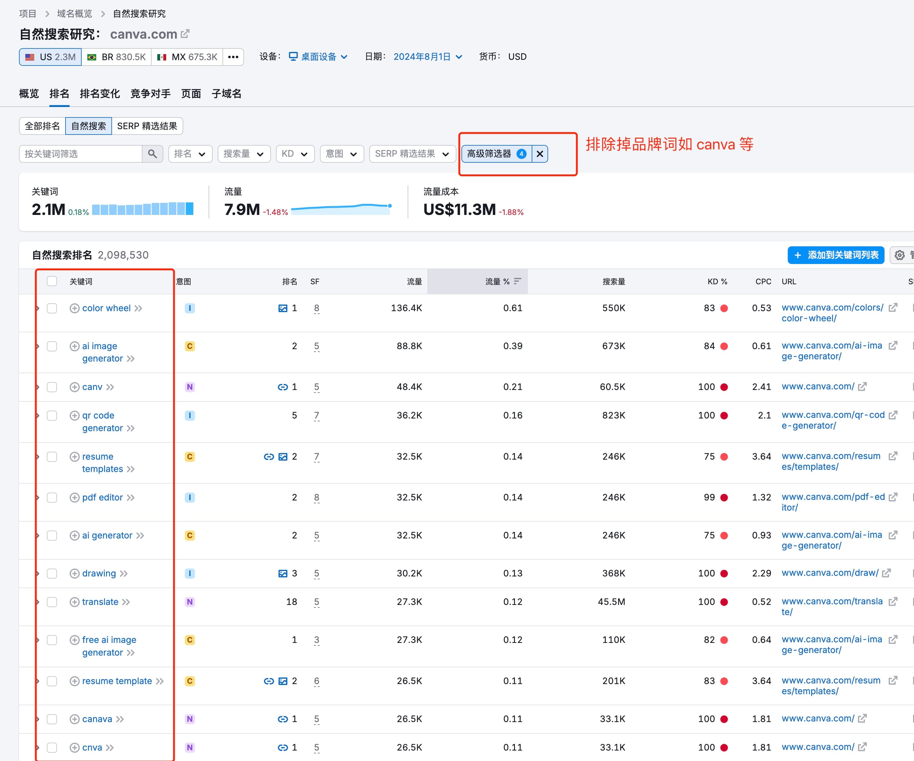
看关键词列表，我们还可以关注那些仅仅靠内页就拿下来了这个关键词搜索的绝大部分流量的词，这种词，既然别人仅仅靠一个内页就能够拿到排名，我们专门做一个网站，举全站之力去做，也很有可能拿到排名，拿到曝光和点击。
第三个平台是 Similarweb，一样可以看到某个网站的关键词列表，一样可以按照一些条件去筛选关键词。
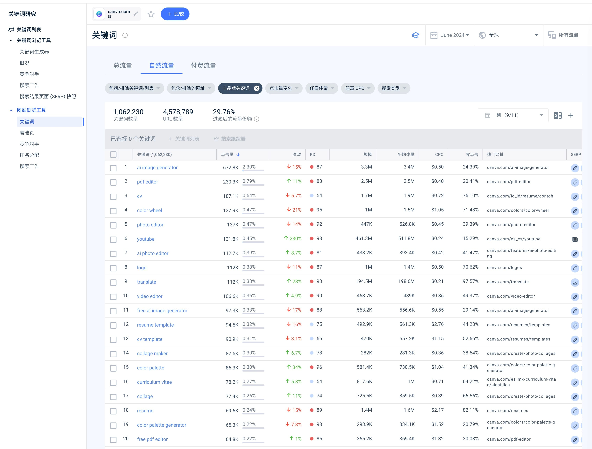
除了关注大站的关键词，我们还需要关注他们的能够获取流量的页面，如 Similarweb 这里就可以看到所有能够获取自然流量的页面，都是通过哪些关键词获取的流量。 而且还可以在点击量变化中选择“新点击量”，筛选那些最近才获得流量的页面。从这些页面，也可以发现一些新的需求关键词。
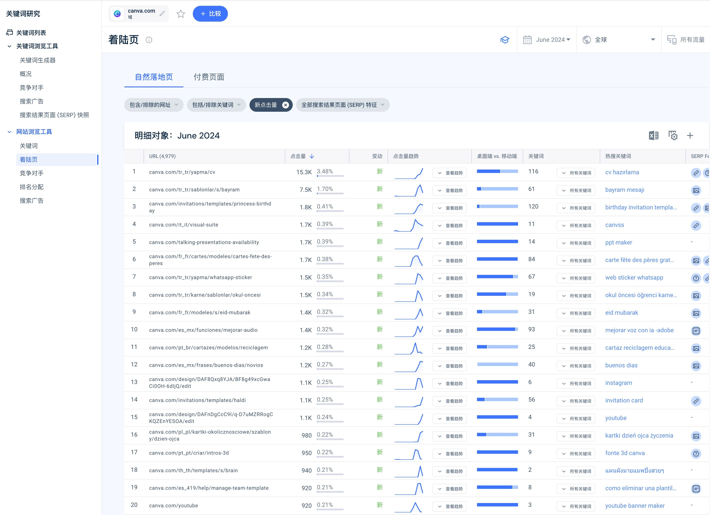
举个例子，这个生日排队邀请函模板页面就获取到了很多新流量。不过这个词本身不新，可能是之前他们这个页面没有拿到排名，最近拿到排名了。
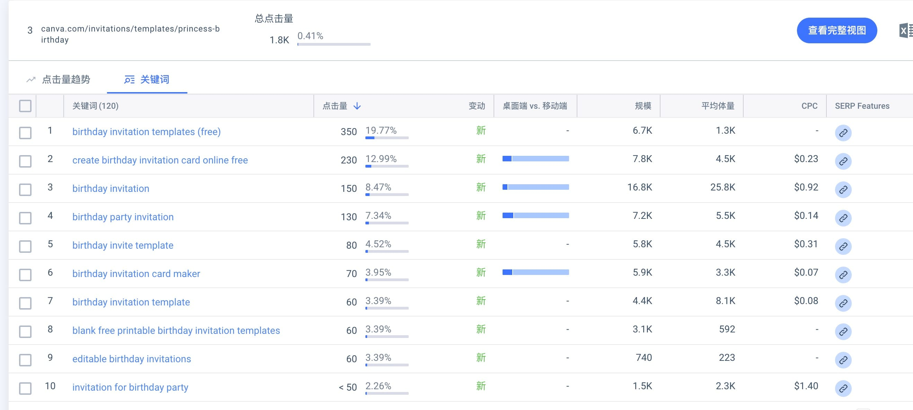
谷歌一搜索，看到的确是��排到了第一名。但是你仔细看会发现，这个词触发了谷歌商品搜索界面。明明是虚拟产品，怎么也会触发谷歌的这个商品搜索界面呢？
很有可能是 Canva 发现这个词被谷歌认定是商品搜索相关词，于是就给自己的页面增加了商品的结构化数据或者在页面增加商品价格信息，让谷歌识别到了这是商品页面。
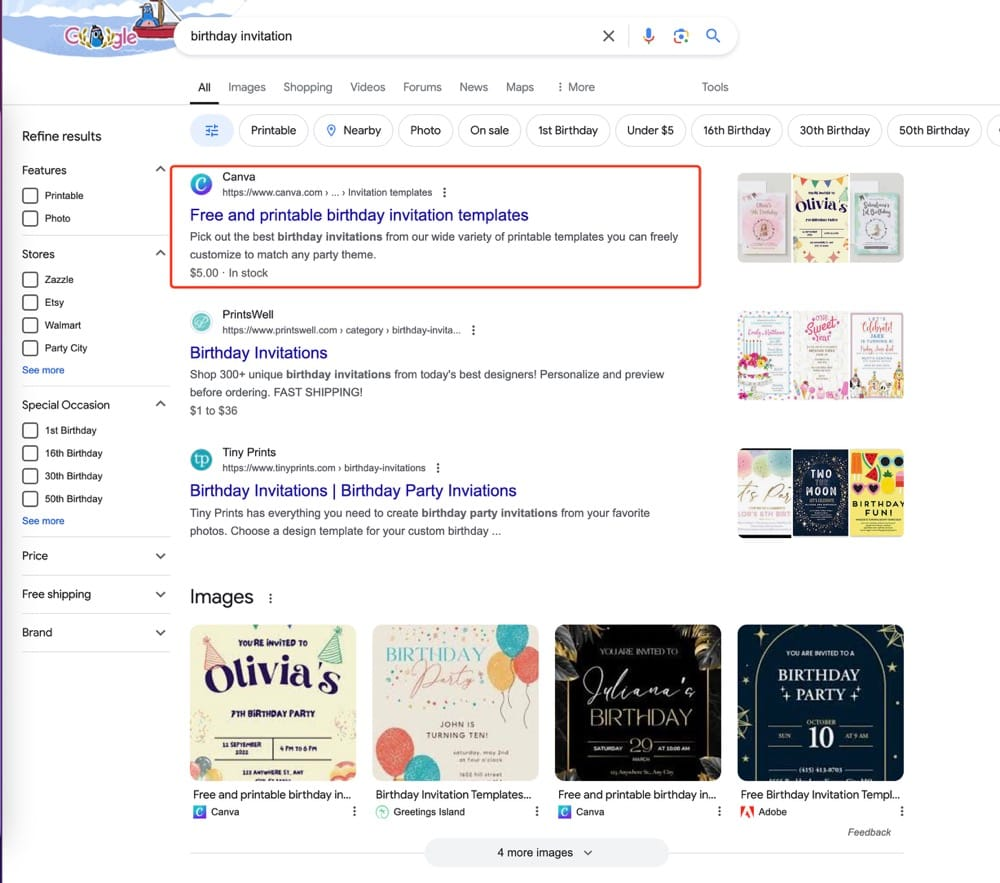
具体什么情况，算是家庭作业，大家可以去研究一下。
现在讲第三种挖掘需求关键词的方法。直接利用谷歌等搜索引擎的下拉推荐搜索词。 比如在谷歌搜索 Birthday，你加一个空格之后，就会出现很多以 Birthday 开头的相关关键词。谷歌放出来的这些词，就是大家经常搜索的关键词。
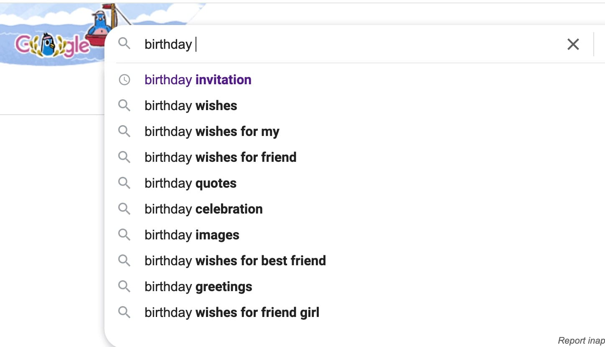
现在讲第四种挖掘需求关键词的方法，把以上三种方法组合起来使用。 在谷歌随便搜索某个关键词，一般排到前三的都是 SEO 做的比较好的网站。 点开这些网站，去 Similarweb 或者 semrush 继续研究这个网站，找出这个网站的更多关键词。 有了关键词，又可以回到谷歌，继续找到三个做的比较好的网站。 这样反反复复循环，就像是在流量的海洋里冲浪，看多了，你绝对能够得到升华。
举例，你搜搜 qr code generator，就找到了 qr-code-generator.com ，这个网站月访问量 660 万，很大了。而且，最终能够向用户收钱，很香。
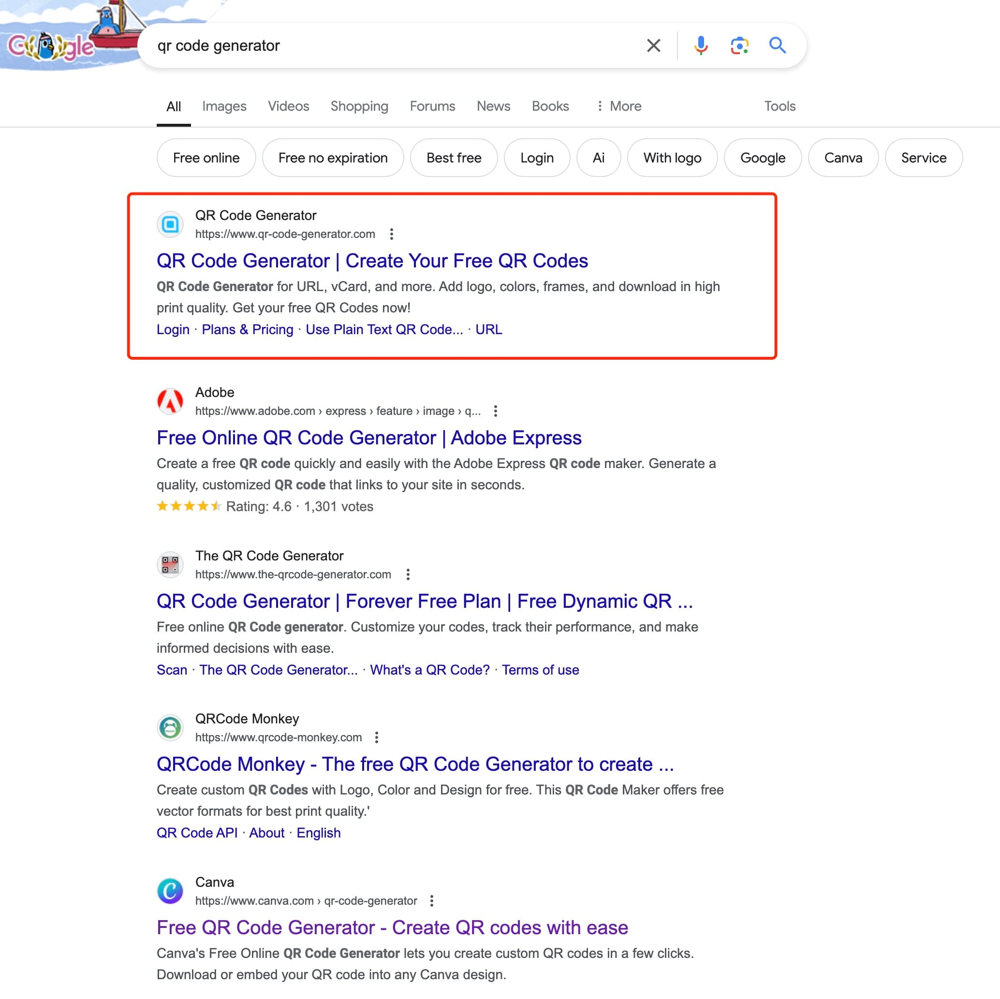
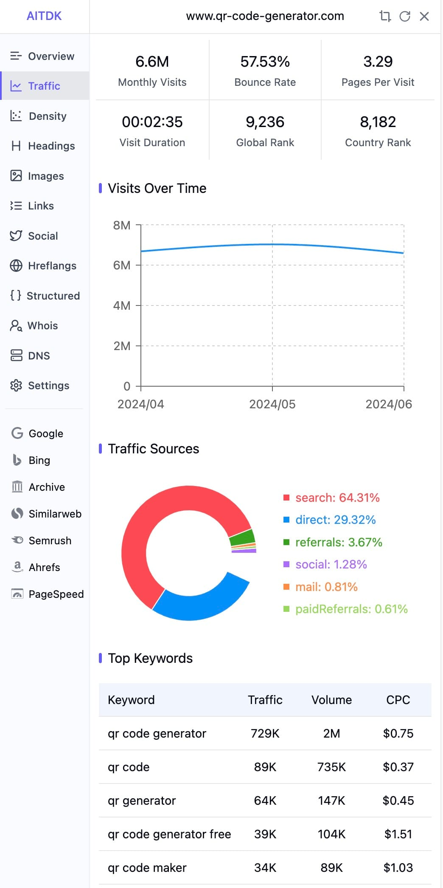
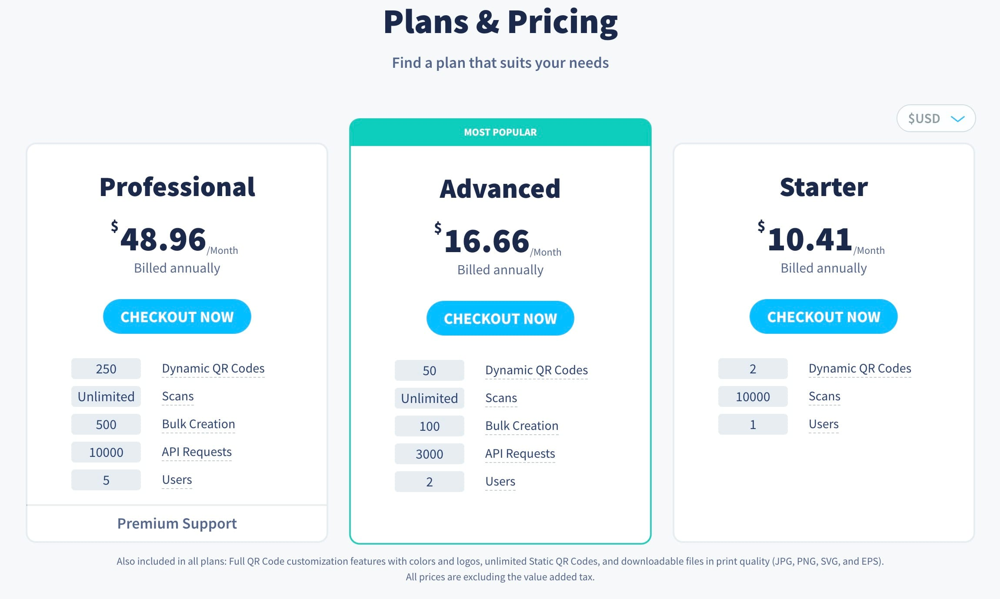
一边靠大量的免费搜索流量，一边还投广告，说明这个生意很赚钱。
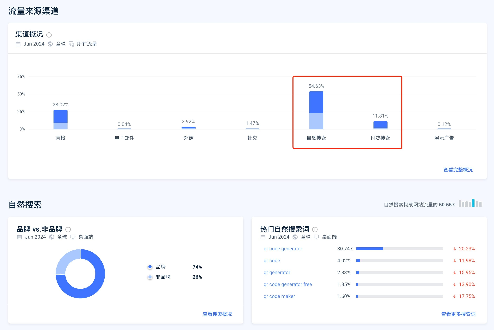
最近 12 个月，这个网站花了 730 万美元的广告费，这种几乎没啥成本，ROI 应该会很高的，我们先按照最极端的，只赚回广告费来计算。790 万的访问量能够带回来 730 万收入，也就是大约 1 个访问量 1 美元。
那么他每个月有 660 万的免费流量，即使每个访问量只赚 0.1 美元，也能赚 66 万美元。
而实际上 ROI 肯定更高，也即是 790 万的访问量可能赚一千多万美元。那么 660 万的免费流量，是不是也能赚回几百万美元呢？
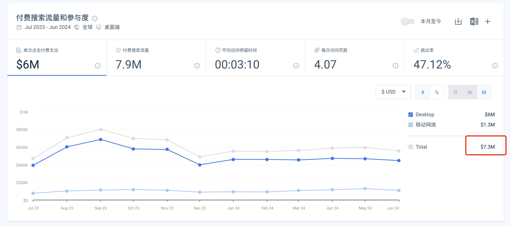
没人能想到不起眼的二维码生成器，这么赚钱吧。
继续去看这个关键词的付费流量，我们去看看买量第一名 qrfy.com 的数据。
这个网站最近 12 个月，花了 1530 万美元广告费。没有哪个傻子会在不赚钱的情况下持续不断的投广告。答案只有一个，能够赚回来。
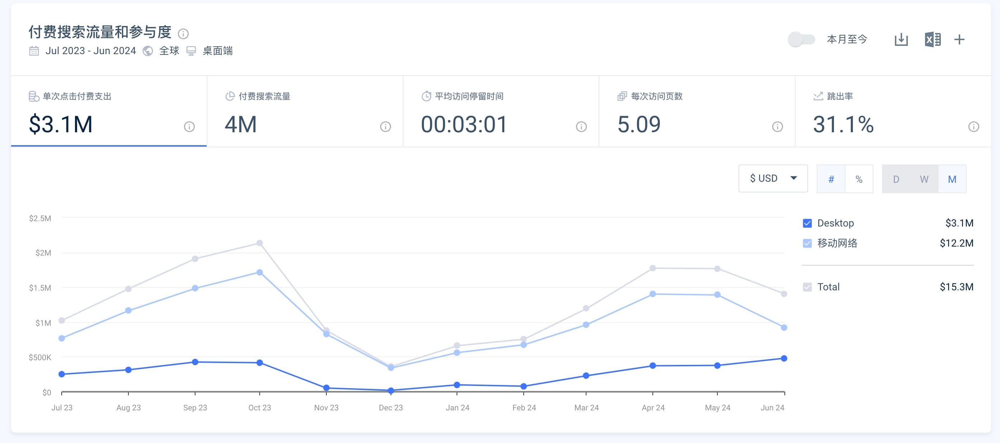
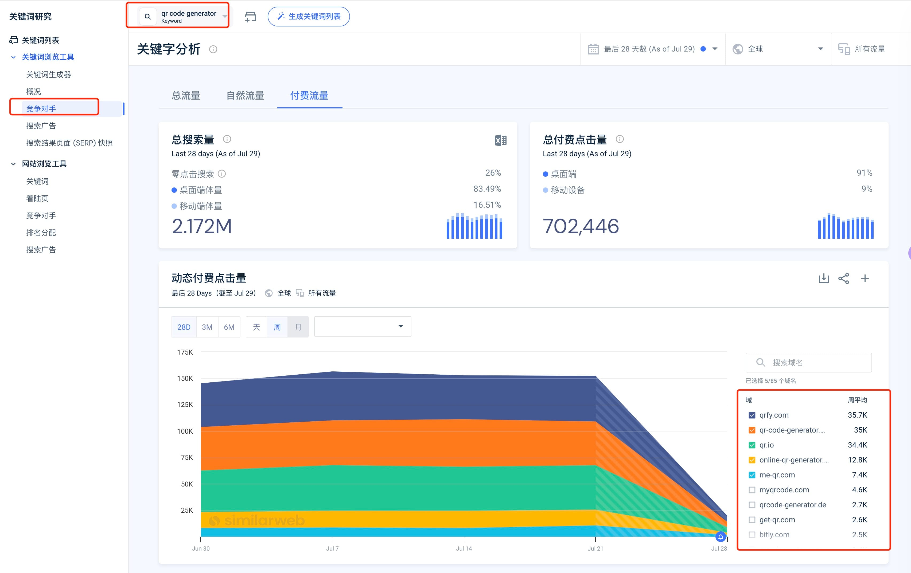
所以，这又引出了第五种挖掘需求的方法，我们去看那些大量在投广告的关键词，就能够找到财富密码。
方法是在 Similarweb 的关键词浏览工具 -> 竞争对手页面，输入关键词，选择付费流量，看看正在投广告的网站。再去看看这个网站花了多少广告费，都花在哪些关键词里。
这是最直接的可以抄作业的方式，因为别人在一直投广告，说明就是一直在赚钱的需求。
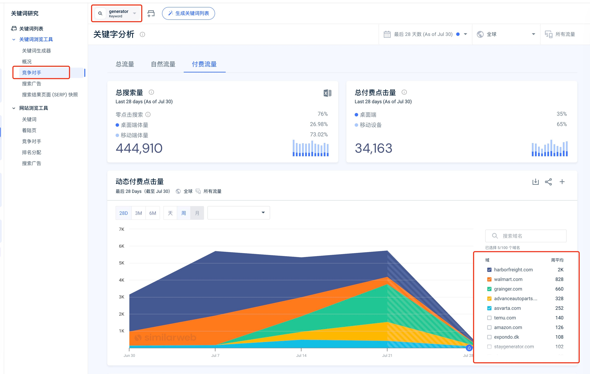
第六种挖掘需求的方法看上面的分享，这也是一种直接可以抄作业的方式，从流量变现的角度，找出那些正在赚钱的网站，分析他们的需求。
实际还有很多挖需求的方法，用到的工具就是上面提到的这些功能，组合起来使用，举一反三，就能够发现更多的方法。 今天的哥飞小课堂就到这里了，整整 2 个小时，很精彩。